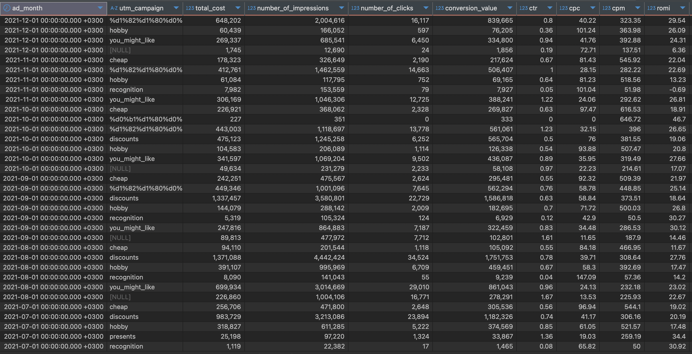

8. Proje – Çoklu Platform Reklam Analizi Dashboard’u (SQL)
Açıklama
Bu analiz, farklı dijital reklam kampanyalarının ROI (Yatırım Getirisi) ve ROMI’sini SQL ile hesaplayarak karşılaştırmalı olarak değerlendirir. Kampanyaların yalnızca maliyeti değil, kullanıcı başına getirisi ve dönüşüm kabiliyeti de kapsamlı biçimde incelenmiştir.
Bu analiz ne kazandırır?
- Birden fazla kampanyanın maliyet & kazanç kıyasını sağlar.
- Harcaması yüksek değil, verimliliği yüksek kampanyalar öne çıkarılır.
- Gösterim, tıklama, dönüşüm oranı gibi metrikler birlikte analiz edilir.
- ROMI ile birlikte kullanıcı etkileşimi incelenerek kampanya etkinliği ölçülür.
- Pazarlama stratejileri bütçe yerine verimlilik odaklı şekillenir.
Sonuç: “Hangi kampanya gerçekten daha etkili?” sorusuna net cevap verir.
Öneriler
- Yüksek ROI’li fakat düşük etkileşimli kampanyalar için gösterim artırıcı aksiyonlar alın.
- Düşük harcama / yüksek ROMI kampanyalarını ölçeklendirin, benzer hedefleme deneyin.
- Gösterimi yüksek / dönüşümü düşük kampanyalarda kreatif veya landing page’i gözden geçirin.
- Segment (coğrafya, cihaz, demografi) bazlı en iyi performans gösteren kampanyaları kopyalayıp test edin.
- Kampanya maliyet-verimlilik oranını düzenli izleyip dinamik bütçe ayarı yapın.
Teknik Analiz
Kullanılan Araç: PostgreSQL / BigQuery
Veri Yapısı: ad_platform, campaign_id, ad_spend, revenue, clicks, impressions, conversions, date
Analiz Bileşenleri:
- Kampanya Karşılaştırması: CTE ile platform verileri tek tabloda birleştirildi.
- ROMI Hesaplaması:
(revenue - ad_spend)/ad_spend; negatif ROMI’ler işaretlendi. - Etkinlik Endeksi:
(ROMI × conversions) / impressionsile verim metrikleştirildi. - Segmentasyon: GROUP BY + HAVING ile verimli / verimsiz gruplar ayrıldı.
- Kampanya Türü Kıyaslama: JOIN + aggregation ile “Video”, “Dönüşüm”, “Retargeting” türleri benchmark edildi.
Kullanılan Araçlar:
PostgreSQL